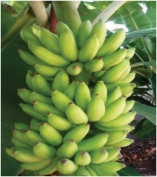

Agriculture for Secondary Schools
Highland banana, which includes Matooke, Uganda, Mchare, Kisukari, Mzuzu,
Kimalindi, Ndizi ng’ombe, and Bokoboko. On the other hand, improved varieties
include TARIBAN 4, TARIBAN 3, TARIBAN 2, and TARIBAN 1.
Figure 2.1 (b): A bunch of
Figure 2.1 (a): Banana field
banana fruits
Activity 2.1
Through library and internet searches, perform the following tasks:
1. Identify the major banana-producing areas of Tanzania.
2. Find information about major banana varieties grown in Tanzania and group
them according to their respective uses.
3. Record your observations, including lessons learned, in your portfolio.
Principles and practices of banana production
Effective field management of banana crops is crucial for maintaining plant
health and ensuring a productive and sustainable banana plantation. The banana
field requires careful attention to site selection, good land preparation, selection
and preparation of banana planting material, planting at recommended spacing,
water, nutrients, pest management, pruning, propping, bagging, and de-suckering.
Choosing a site for banana production
Banana crops grow in deep, well-drained, loamy soils rich in organic matter. It
requires an annual rainfall ranging from 1000 - 2000 mm. It can also grow well
in altitudes 0 - 2000 m above sea level. The optimal growth temperature and soil
22
Student’s Book Form Two